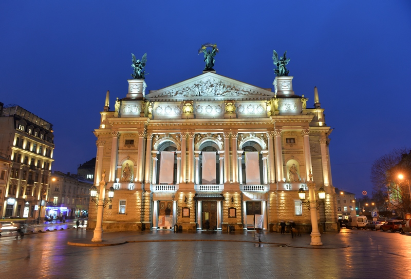

Місто кави та старовинної архітектури

Львів - культурне місто на заході України, відоме історичним центром, затишними площами, кав'ярнями та різноманіттям архітектурних стилів.
Чому я обираю Львів
Львів приваблює мене повільним ритмом прогулянок і особливою атмосферою старого міста. Тут кожна вуличка має власну історію, а коротка подорож легко перетворюється на культурне відкриття.
Цікаві факти
- Історичний центр Львова внесений до списку Всесвітньої спадщини ЮНЕСКО.
- Львів часто називають кавовою столицею України.
- У місті збереглися будівлі різних європейських архітектурних стилів.
Визначні місця
Площа Ринок, Львівська опера, Вірменський квартал, Високий замок і Личаківський цвинтар.
Моя оцінка: 9.5/10